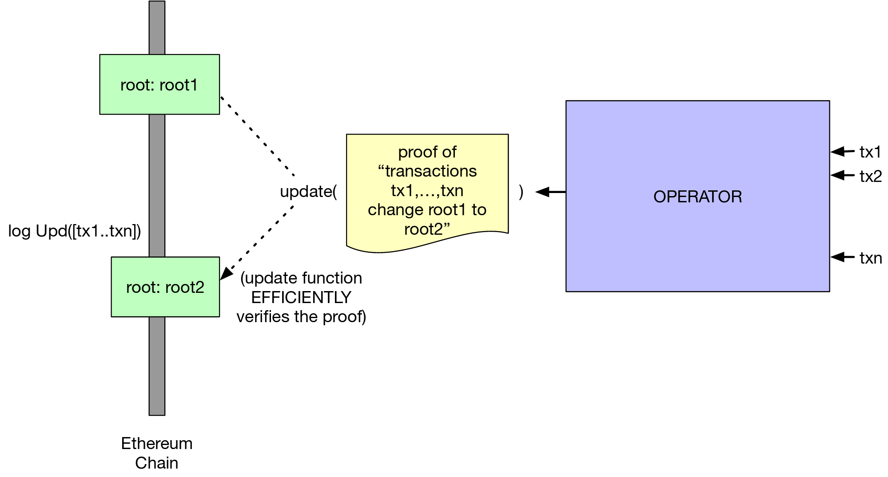

What you'll build
We will attempt to create circuits and contract for rollup chain that does ether/ERC20 transfers and is much more scalable than current ethereum chain from scratch!
What you'll learn
- How to create circuits using snarkjs and circom 🤗
- How to implement simple arithematic constraints 😀
- How to verify signatures inside circuits 🎉
- How to verify merkel proofs of inclusion 🎊
- How to process transactions for zkRollup inside a circuit ❤️
- Creating snark proofs for transaction batch 😇
- Submitting proofs on chain! 🤩
What you'll need
- We are using
node v10.16.0, which you can possibly install using nvm - Clone this repo:
git clone https://github.com/rollupnc/RollupNC_tutorial - Clone the submodules:
git submodule update --init --recursive
> this should clonecircomlib. We are using v0.0.6 for this tutorial. To make sure we're using the same commit, dogit checkout 77928872169b7179c9eee545afe0a972d15b1e64in thecircomlibrepository. - Install npm packages in both the root repository and the
circomlibsubmodule:npm i
< TBD >
ZkSnarks have been used for privacy applications and for having private transactions on chains like ZCash for a few years now. Rollup utilises zkSnarks to scale ethereum by taking advantage of the succinctness and privacy provided by snarks.
We achive scalability by not having to send user signatures on-chain and instead send one proof which signifies 1000's of signature verifications and other transaction validation checks have been done correctly off-chain.
We send minified form of transactions on-chain as input to circuit to have data-available.
How zkRollup works?
There are two actors involved in a rollup chain: Coordinator and User.
- We maintain account merkel tree on chain which can be updated by sending snark proof.
- Users sends transaction to coordinator with signatures via RPC/API's.
- Coordinator collects all the transactions and creates a batch which is processed by the snark circuit, if the circuit finds all transactions in the batch to be valid it emits a proof.
- This validity proof will be submitted and verified on chain which signifies that state was updated properly off-chain.
- This updates the onchain account merkel tree.
We will dive into specifics of the construction in the next parts.
Why zkRollup is Amazing ?
- No exit games
- No liveliness assumptions
- No data availability issues
- Sub cent fees for transactions
- Can create rollup chain for any state transitions not just transfers( fairWin anyone?! )
< Brief up about zkSnarks>
< Relavent links to learn more >
< How much are we going to use in this workshop >
Circom and snarkjs are these compiler and helper packages by IDEN3 to compile and use circuits. They are JS based and hence very easy to use for small circuits. We will go through some commands which we will be using in this tutorial.
Compiling circom circuits
Compiles your circuit and generates compiled circuit in json format for snarkjs to use.
circom <your_circuit_name>.circom -o circuit.json`
Generate inputs for your circuit
Generates public private inputs for your circuit
node generate_circuit_input.js
Note: This exists only for the course of our workshop
Calculate witness
Generates witness for your circuit using the compiled circuit and input file created in the above step
snarkjs calculatewitness -c circuit.json -i input.json
Performing trusted setup
Remember the infamous "Trusted Setup", to perform trusted setup on your device for a circuit use the below command. It creates a Proving and Verification key for your circuit.
snarkjs setup -c circuit.json --protocol groth
Generate the proof
To generate proof for your circuit use the below command. It uses witness and proving key as inputs and generates a proof for you which can be passed around to certify correcct computation of circuit
snarkjs proof -w witness.json --pk proving_key.json
This is a contrived example to familiarise ourselves with the syntax of circom and how it works with snarkjs.
Let's write a circuit to check:
- that the sum of two private inputs
a + bis equal to a public inputc; - that the product
b * cis equal to private inputd;
Let's get started 🎊🎉
- $ cd 1_simple_arithmetic
- $ touch circuit.circom
// create template
template SimpleChecks() {
// declare a variables which will store private inputs
signal private input a;
signal private input b;
signal private input d;
// declare public input variables
signal input c;
// declate output variables
signal output out;
// force a + b = c
a + b === c;
// force b * c = d
// TODO : Fill in the constraint
// assign output to output variable
out <== c + d;
}
// export the template
component main = SimpleChecks();
Now that we are done with this small circuit let's see how we can generate the proof for this circuit
Compile it
circom circuit.circom -o circuit.json
Generate your input for the circuit
node generate_circuit_input.js
Calculate the witness for the circuit
snarkjs calculatewitness -c circuit.json -i input.json
Generate the proof
snarkjs setup -c circuit.json --protocol groth
Verify the proof
snarkjs verify
It's time for a challenge guys!
Goal : Modify the circuit and input to take in length-4 arrays of a, b, c, and d, and perform the checks in a for loop. Output the sums of c and d arrays.
To get you started, here's some help
template SimpleChecks(k) {
signal private input a[k];
signal private input b[k];
signal input c[k];
signal private input d[k];
signal output out;
var sum = 0;
for (var i = 0; i < k; i++){
// force a + b = c
a[i] + b[i] === c[i];
// force b * c = d
// fill this in
// add up c and d arrays
// use the variable 'sum' defined outside the for loop
}
// output sum of c and d arrays
out <== sum;
}
component main = SimpleChecks(4);
Signing data and verifying signatures are an essential part of any rollup chain you want to design. We use the EdDSA signature because it's much more efficient.
This example works with useful libraries in circomlib. Note: we are using v0.0.6 of circomlib.
Let's get started 🎊🎉
- $ cd 2_verify_eddsa
- $ touch circuit.circom
include "../circomlib/circuits/eddsamimc.circom";
template VerifyEdDSAMiMC() {
signal input from_x;
signal input from_y;
signal input R8x;
signal input R8y;
signal input S;
signal input M;
component verifier = EdDSAMiMCVerifier();
verifier.enabled <== 1;
verifier.Ax <== from_x;
verifier.Ay <== from_y;
verifier.R8x <== R8x
verifier.R8y <== R8y
verifier.S <== S;
verifier.M <== M;
}
component main = VerifyEdDSAMiMC();
You know the next steps, but here's some help
- Compile it:
circom circuit.circom -o circuit.json - Generate your input for the circuit:
node generate_circuit_input.js - Calculate the witness for the circuit:
snarkjs calculatewitness -c circuit.json -i input.json - Generate the proof:
snarkjs setup -c circuit.json --protocol groth - Verify the proof:
snarkjs verify
Goal : Modify the circuit and input to take in a length-3 preimage of the message as a private input, and hash them inside the circuit.
To get you started:
include "../circomlib/circuits/eddsamimc.circom";
include "../circomlib/circuits/mimc.circom";
template VerifyEdDSAMiMC(k) {
signal input from_x;
signal input from_y;
signal input R8x;
signal input R8y;
signal input S;
signal private input preimage[k];
component M = MultiMiMC7(k,91);
M.in[0] <== // the first element of your preimage
M.in[1] <== // the second element of your preimage
M.in[2] <== // the third element of your preimage
component verifier = EdDSAMiMCVerifier();
verifier.enabled <== 1;
verifier.Ax <== from_x;
verifier.Ay <== from_y;
verifier.R8x <== R8x;
verifier.R8y <== R8y;
verifier.S <== S;
verifier.M <== M.out;
}
component main = VerifyEdDSAMiMC(3);
This example shows how to write smaller templates and use them as components in the main circuit. To verify a Merkle proof, we need to take in a leaf and its Merkle root, along with the path from the leaf to the root. Let's break this down into two circuits:
get_merkle_root.circom: this takes a leaf and a Merkle path and returns the computed Merkle root.leaf_existence.circom: this compares an expected Merkle root with a computed Merkle root.
Let's get started 🎊🎉
- $ cd 3_verify_merkle
- $ touch get_merkle_root.circom
Paste the below code to get_merkle_root.circom and go through the in line documentation.
include "../circomlib/circuits/mimc.circom";
template GetMerkleRoot(k){
// k is depth of tree
// merkel leaf
signal input leaf;
// path from leaf to root
signal input paths2_root[k];
// path from leaf to root with pos
signal input paths2_root_pos[k];
// the output variable
signal output out;
// hash of first two entries in tx Merkle proof
component merkle_root[k];
merkle_root[0] = MultiMiMC7(2,91);
merkle_root[0].in[0] <== leaf - paths2_root_pos[0]* (leaf - paths2_root[0]);
merkle_root[0].in[1] <== paths2_root[0] - paths2_root_pos[0]* (paths2_root[0] - leaf);
// hash of all other entries in tx Merkle proof
for (var v = 1; v < k; v++){
merkle_root[v] = MultiMiMC7(2,91);
merkle_root[v].in[0] <== paths2_root[v] - paths2_root_pos[v]* (paths2_root[v] - merkle_root[v-1].out);
merkle_root[v].in[1] <== //can you figure this one out?
}
// output computed Merkle root
out <== merkle_root[k-1].out;
}
component main = GetMerkleRoot(2);
Try to fill in the second line of the for loop using the pattern from the lines before. (The solution is in sample_get_merkle_root.circom.)
Now, make the second file leaf_existence.circom and paste this in:
include "./get_merkle_root.circom";
// checks for existence of leaf in tree of depth k
template LeafExistence(k){
// k is depth of tree
signal input leaf;
signal input root;
signal input paths2_root_pos[k];
signal input paths2_root[k];
component computed_root = GetMerkleRoot(k);
computed_root.leaf <== leaf;
for (var w = 0; w < k; w++){
computed_root.paths2_root[w] <== // assign elements from paths2_root
computed_root.paths2_root_pos[w] <== // assign elements from paths2_root_pos
}
// equality constraint: input tx root === computed tx root
root === computed_root.out;
}
component main = LeafExistence(2);
Make sure to REMOVE component main = GetMerkleRoot(2) from get_merkle_root.circom.
Modify your input to work with leaf_existence.circom.
Like you did in the EdDSA verification exercise, provide the preimage of the leaf hash as private inputs to leaf_existence.circom, and hash them in the circuit.
All state in a rollup chain is stored in a tree whose root is kept on chain and can only be changed by submitting a snark proof which certifies valid state transitions off chain. For this workshop since we are doing ERC20 style transfers we can store user balance in the leaf of merkel tree. Let's find out more!

Account leaf format
Each account is represented by a single leaf in the accounts tree. It is calculated by hashing the following components in the following order:
leaf = Hash(pubkey_x, pubkey_y, balance, nonce, token_type)
The account is represented by the following inputs:
class Account = {
pubkey_x: public key X // (253 bits)
pubkey_y: public key Y //(253 bits)
balance: balance // (128 bits)
nonce: nonce // (32 bits)
token_type: token type // (32 bits)
}
For the purpose of this workshop we are going to use this minimal account leaf structure.
class Account = {
pubkey: eddsa_pubkey,
balance: integer
}

Transaction
For each SNARK, we construct a Transactions Merkle tree, whose leaves are the transactions processed by the SNARK.
class Transaction = {
from: eddsa_pubKey,
fromIndex: integer, // from index is the index of sender's leaf in the accounts tree
to: eddsa_pubKey,
amount: integer,
nonce: integer,
token_type: integer
}
For the purpose of this workshop we are going to use this minimal transaction structure.
class Transaction = {
from: eddsa_pubkey,
to: eddsa_pubkey,
amount: integer
}
Deposits to rollup
Each deposit creates a leaf in the smart contract. The smart contract checks that the nonce, token_type and balance are correct. Anyone can aggregate these deposits into a deposit_tree with a deposit_root.
The coordinator can add these to the current balance tree by:
- Proving that an empty_node at the same depth as the deposit_tree is empty in the account_tree.
- Replacing this empty_node with the deposit_root
- Using the same Merkle proof to calculate the new account_root.

We will start with processing a single transaction.
Building ZkRollup Circuit
In ZkRollup, processing a single transaction involves:
- Checking that the sender account existsin a tree of accounts,
accounts_root - Checking that the hash of the transaction was signed by the sender
- Debiting the sender account
- Updating the
accounts_rootto getintermediate_root - Checking that the receiver account exists in
intermediate_root - Crediting the receiver account
- Updating the
accounts_rootto getfinal_root
Let's get started 🎊🎉
Create a file called circuit.json and fill in this boilerplate code.
include "./leaf_existence.circom";
include "./verify_eddsamimc.circom";
include "./get_merkle_root.circom";
include "../circomlib/circuits/mimc.circom";
// create template
template ProcessTx(k){
// STEP 1: Check sender's account existence
// STEP 2: Check sender's account signature
// STEP 3: Debit sender's account and create updated leaf
// STEP 4: Update accounts tree root with changes to sender's balance ie Debit sender's account
// Let's call this new root "intermediate root"
// STEP 5: Verify if receiver's account exists in intermediate root
// STEP 6: Credit receiver's account
// STEP 7: Update account's root with updates to receiver's account
// STEP 8: Output final root
}
// create main so that we can call it directly
component main = ProcessTx(1);
To initialise signals just copy paste the below code in the boiler plate.
// NOTE: `k` is the account tree depth
// accounts tree initial root
signal input accounts_root;
// account tree root after 1 update
signal private input intermediate_root;
// account pubkeys
signal private input accounts_pubkeys[2**k, 2];
// account balances
signal private input accounts_balances[2**k];
// transactions input
signal private input sender_pubkey[2];
signal private input sender_balance;
signal private input receiver_pubkey[2];
signal private input receiver_balance;
signal private input amount;
signal private input signature_R8x;
signal private input signature_R8y;
signal private input signature_S;
signal private input sender_proof[k];
signal private input sender_proof_pos[k];
signal private input receiver_proof[k];
signal private input receiver_proof_pos[k];
// final account tree root as output
signal output new_accounts_root;
Check sender existence using the LeafExistence circuit we created in ‘Part-3`. Copy paste the below code and fill out the correct signals.
// verify sender account exists in accounts_root
component senderExistence = LeafExistence(k, 3);
senderExistence.preimage[0] <== sender_pubkey[0];
senderExistence.preimage[1] <== sender_pubkey[1];
senderExistence.preimage[2] <== sender_balance;
senderExistence.root <== accounts_root;
for (var i = 0; i < k; i++){
senderExistence.paths2_root_pos[i] <== sender_proof_pos[i];
senderExistence.paths2_root[i] <== sender_proof[i];
}
Check that sender signature is correct and sender has signed the right message using the VerifyEdDSAMiMC circuit we created in Part-2
// check that transaction was signed by sender
component signatureCheck = VerifyEdDSAMiMC(5);
signatureCheck.from_x <== sender_pubkey[0];
signatureCheck.from_y <== sender_pubkey[1];
signatureCheck.R8x <== signature_R8x;
signatureCheck.R8y <== signature_R8y;
signatureCheck.S <== signature_S;
signatureCheck.preimage[0] <== sender_pubkey[0];
signatureCheck.preimage[1] <== sender_pubkey[1];
signatureCheck.preimage[2] <== receiver_pubkey[0];
signatureCheck.preimage[3] <== receiver_pubkey[1];
signatureCheck.preimage[4] <== amount;
We need to reduce balance of sender by amount he is trying to transfer, so if sender's balance was 100 before transfer of 10, after transfer it should be 90. Also hash the new account leaf using MultiMiMC7 circuit template.
// debit sender account and hash new sender leaf
component newSenderLeaf = MultiMiMC7(3,91){
newSenderLeaf.in[0] <== sender_pubkey[0];
newSenderLeaf.in[1] <== sender_pubkey[1];
newSenderLeaf.in[2] <== sender_balance - amount;
}
Now that we have updated the sender's leaf we need to recompute the account tree root.
// create a component using `GetMerkleRoot` circuit.
component computed_intermediate_root = GetMerkleRoot(k);
computed_intermediate_root.leaf <== newSenderLeaf.out;
for (var i = 0; i < k; i++){
computed_intermediate_root.paths2_root_pos[i] <== sender_proof_pos[i];
computed_intermediate_root.paths2_root[i] <== sender_proof[i];
}
// check that computed_intermediate_root.out === intermediate_root
computed_intermediate_root.out === intermediate_root;
To proceed further with the transfer we need to first check if the receiver's leaf exists in the tree.
// verify receiver account exists in intermediate_root
component receiverExistence = LeafExistence(k, 3);
// Provide the appropriate signals to this component!
// See senderExistence for reference
We need to update the receiver's account balance with the amount sent by sender. Also create a new leaf hash for updated account.
// credit receiver account and hash new receiver leaf
component newReceiverLeaf = MultiMiMC7(3,91){
// provide the appropriate signals to this component!
// see newSenderLeaf for reference
}
We need to update the intermediate accounts root with the receiver balance update
// update accounts_root
component computed_final_root = GetMerkleRoot(k);
// provide the appropriate signals to this component!
// see computed_intermediate_root for reference
Now we just need to send the final account tree root as output signal!
// output final accounts_root
new_accounts_root <== computed_final_root.out;
Now that we have a complete circuit its time to create inputs and verify the proof!
Compile it
circom circuit.circom -o circuit.json
Generate your input for the circuit
node generate_circuit_input.js
Calculate the witness for the circuit
snarkjs calculatewitness -c circuit.json -i input.json
Generate the proof
snarkjs setup -c circuit.json --protocol groth
Verify the proof
snarkjs verify
< Add how to create solidity file and how to verify proof >
Processing multiple transactions requires us to update the accounts_root many times before we arrive at the final one. This means we have to pre-compute all the intermediate_roots and pass them to the circuit to use in validating Merkle proofs.
Check out https://github.com/rollupnc/RollupNC/blob/master/snark_circuit/multiple_tokens_transfer_and_withdraw.circom to see how it was implemented.